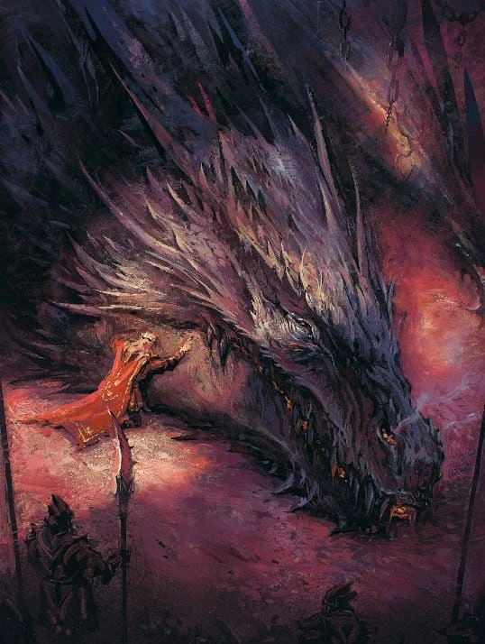
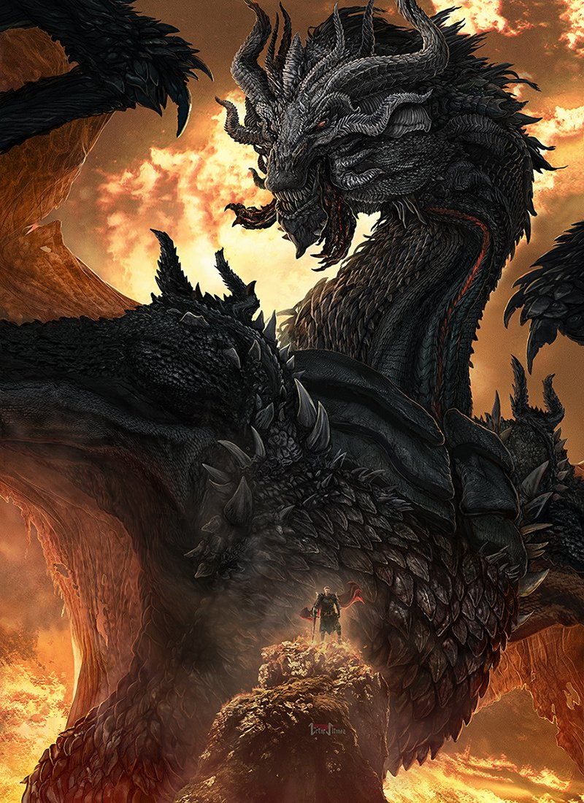
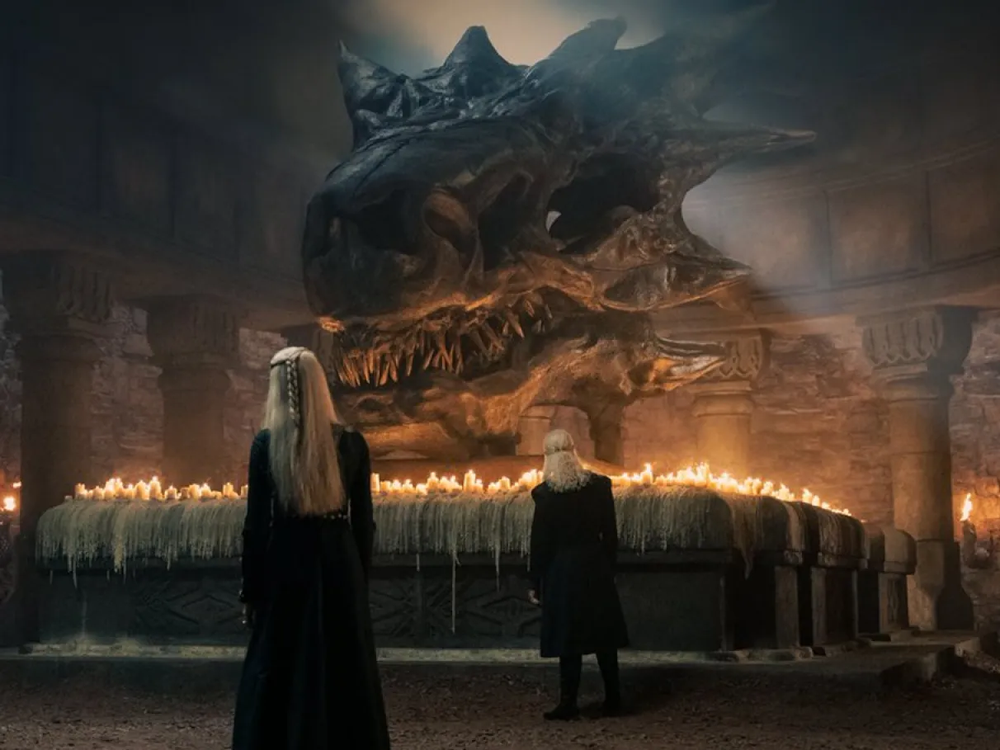

Nascido na Antiga Valíria, Balerion foi o único dragão que sobreviveu à Perdição e viajou para Pedra do Dragão
com a Casa Targaryen.
Ele alcançou o ápice de sua glória como a montaria de Aegon, o Conquistador, tornando-se a arma definitiva na
unificação de Westeros ao queimar Harrenhal e criar o Trono de Ferro com seu sopro negro e devastador.
Após a morte de seu primeiro mestre, ele serviu a outros três montadores — incluindo o cruel Rei Maegor e a
jovem Aerea, com quem fez uma misteriosa e trágica viagem de volta às ruínas de Valíria.
Envelhecido, lento e cansado, Balerion foi reivindicado por seu último cavaleiro, o futuro Rei Viserys I, e
morreu pacificamente de velhice em 94 d.C., restando apenas seu crânio colossal como testemunha do maior titã
alado que Westeros já conheceu.



Voltar ao Menu Próximo dragão